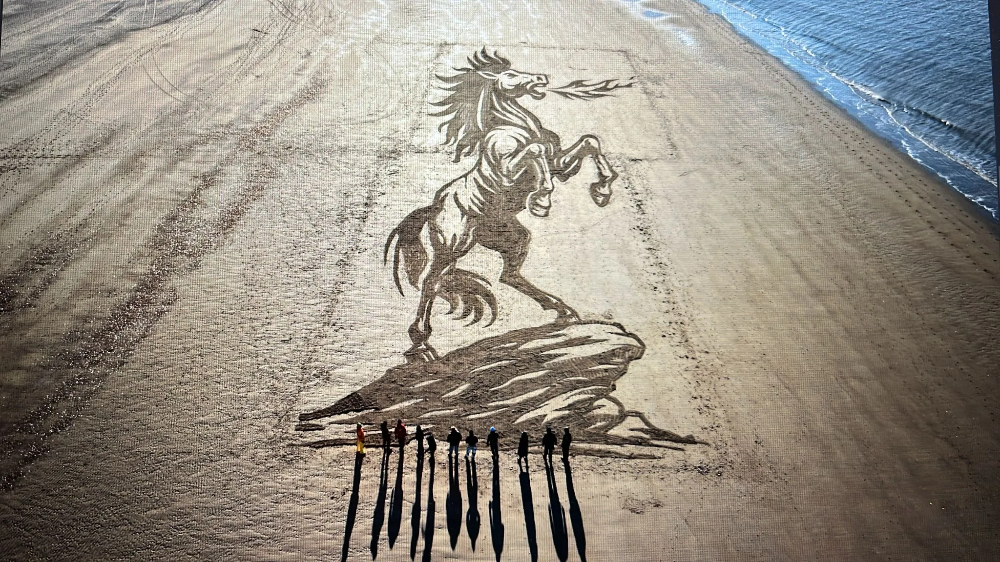

Plate I · Inspect Scale ↗ Plate II · Solar Horizon ↗
Plate II · Solar Horizon ↗
PLATE I · № 01
The Fire Horse
Etched into the North Sea shoreline at low tide, welcoming the Year of the Fire Horse before the evening surf reclaimed the beach.
Nieuw-Haamstede, Zeeland · 2025
120m × 80m · Tidal Sand Drawing